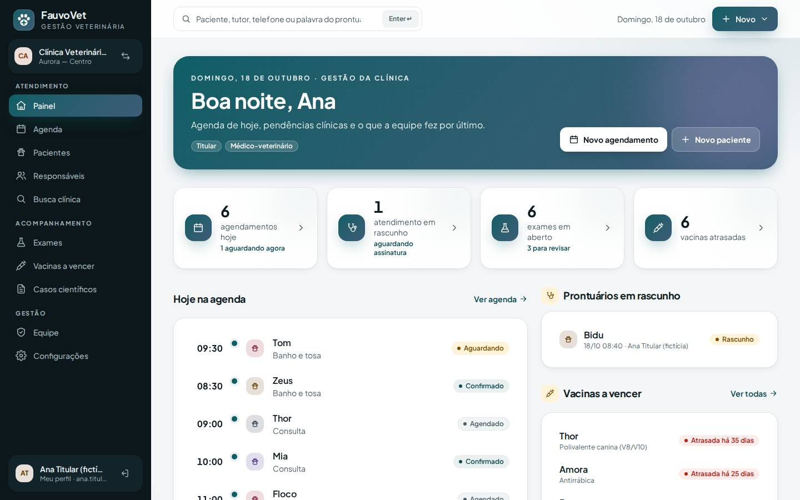
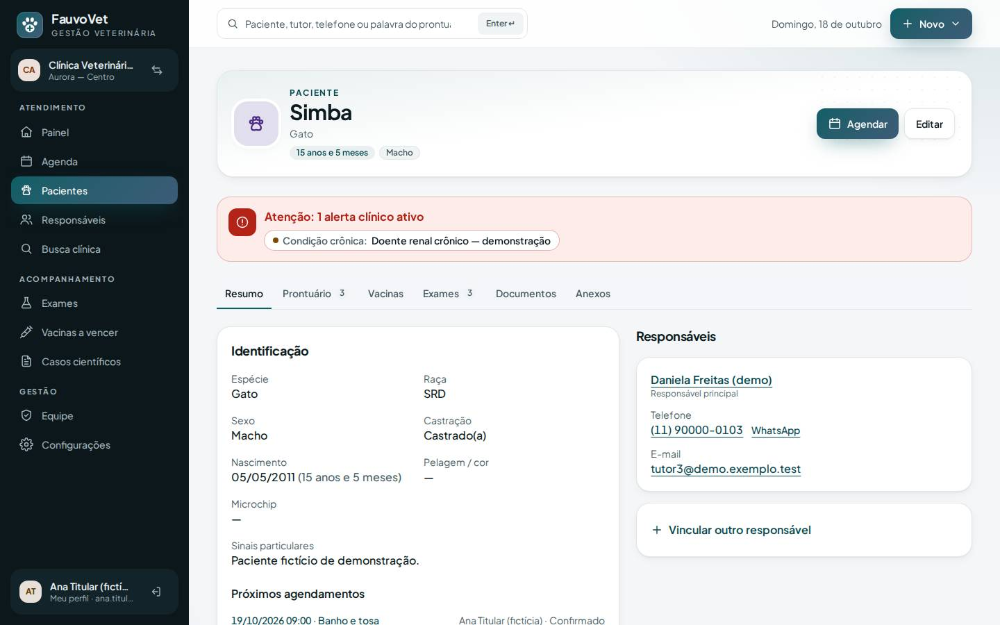
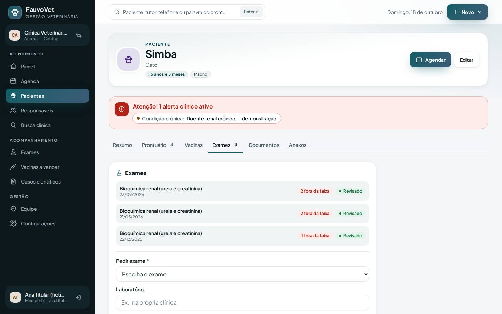
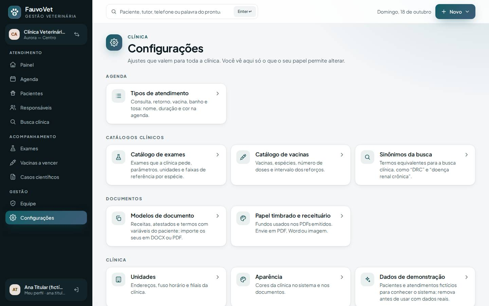
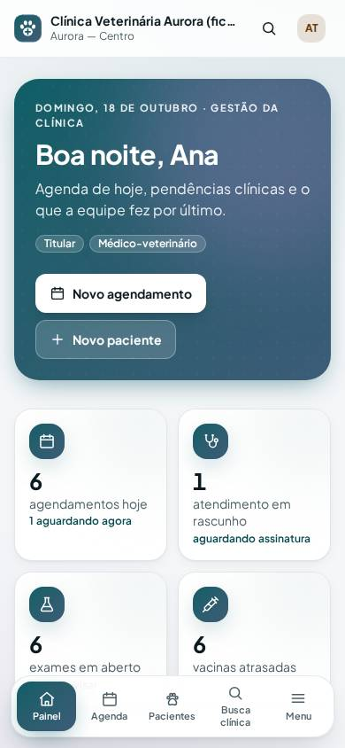
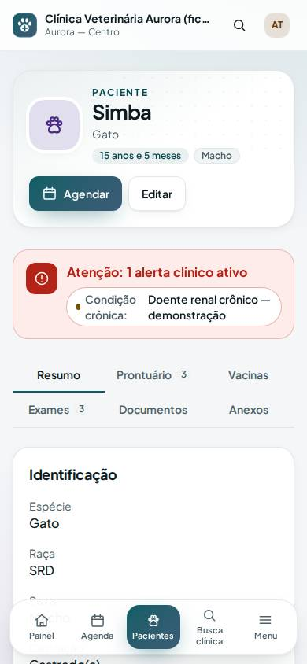
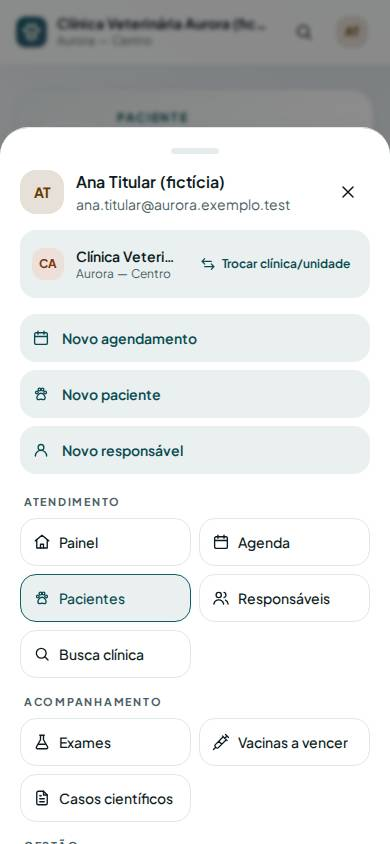

FauvoVet — Análise de usabilidade e navegação reorganizada
ID: 2026-10-21-navegacao-reorganizada · Data: 18/10/2026 · Módulo: navegação, painel, ficha do paciente, configurações · Estado: IMPLEMENTADO E TESTADO LOCALMENTE
1. Objetivo e contexto
O proprietário pediu uma revisão crítica de tudo o que já foi feito: menu a menu, feature a feature, avaliando se cada coisa está no melhor lugar e se a navegação ajuda ou atrapalha. A análise usou a clínica de demonstração (dados fictícios), com o titular (que também é veterinário), o veterinário e a recepção, no computador (1440×900) e no celular (390×844).
Principais problemas encontrados
- Menu lateral cortado. O titular tinha 18 itens no menu. Numa tela de 900 px de altura, só 1 dos 8 itens de “Configurações” aparecia, sem nenhum sinal de que dava para rolar. Na prática, “Modelos de documento”, “Papel timbrado”, “Catálogo de exames” e outros ficavam invisíveis.
- A ficha do paciente era uma página só, enorme: 3.646 px no computador e 5.370 px no celular. O prontuário, o mais usado pelo veterinário, ficava abaixo da identificação, dos responsáveis e do formulário de vacina. Formulários de vacina, exame, anexo e alerta ficavam sempre abertos.
- Defeito no painel: quem estava aguardando na recepção sumia de “Hoje na agenda” assim que o horário marcado terminava. Às 21h, o painel dizia “Nenhum atendimento pendente hoje” enquanto a agenda mostrava o Tom aguardando.
- O painel mostrava estrutura em vez de trabalho. “2 unidades” e “5 membros ativos” ocupavam metade dos indicadores, sem relação com o dia. “Novo agendamento” e “Novo paciente” apareciam 3 vezes: na faixa de boas-vindas, no botão “Novo” e nos “Atalhos”, que ainda traziam “Nova unidade” e “Ver unidades”.
- A atividade recente mostrava códigos técnicos (
demo_data.loaded,document_background.uploaded), além de “há 0 segundo” e cada “entrou no ambiente”. - Textos prometiam o que não existe: “Seu painel mostrará recebimentos, caixa e pendências” para o financeiro, módulo que ainda não foi construído.
- Celular: a barra inferior pegava os 4 primeiros itens do menu (Painel, Agenda, Pacientes, Responsáveis). Para o veterinário, “Responsáveis” ocupava o lugar da Busca clínica. O resto ficava escondido atrás do avatar, sem indicação de menu.
- Nomes inconsistentes: você pediu “papel timbrado e receituário”, mas o menu e a página diziam “Fundos de documento”. “Exames” e “Casos científicos” usavam o mesmo ícone.
2. O que mudou
Análise menu a menu
Manter = está no lugar certo · Mover = mudou de lugar · Corrigir = defeito ou atrito resolvido.
| Item | Antes | Veredito | Por quê / o que foi feito |
|---|---|---|---|
| Painel | Atendimento | Corrigir | Indicadores agora são pendências do papel: agendamentos de hoje, rascunhos a assinar, exames em aberto (com “para revisar”) e vacinas atrasadas. Unidades e equipe só aparecem se o papel não tem pendências a mostrar. Quem aguarda ou está em atendimento sempre aparece primeiro. Atalhos duplicados foram removidos. Atividade em português, sem eventos de leitura. Texto do topo honesto por papel. |
| Agenda | Atendimento | Manter | É o fluxo principal da recepção e do veterinário. Atritos que ficaram para depois (em docs/IDEAS.md): os filtros exigem clicar em “Ver”, e o fuso aparece como “America/Sao_Paulo”. |
| Pacientes | Atendimento | Corrigir | A ficha ganhou abas: Resumo, Prontuário, Vacinas, Exames, Documentos e Anexos, com contadores, só as que o papel pode ver. O alerta clínico fica fixo acima das abas, para nunca passar despercebido. “Vincular outro responsável” passou a ficar recolhido. Abrir a ficha a partir de um exame, atendimento, documento, vacina a vencer ou trecho da busca já leva à aba certa. |
| Responsáveis | Atendimento | Manter | A recepção usa bastante, e um tutor tem vários pets. Saiu da barra do celular para quem tem acesso clínico, onde a Busca clínica é mais útil. |
| Busca clínica | Atendimento (6º item) | Mover | Logo depois de Pacientes, onde faz sentido, e na barra do celular de quem tem acesso clínico. Sobreposição conhecida: a busca de Pacientes também procura no prontuário. A unificação está proposta em IDEAS. |
| Vacinas a vencer | Atendimento | Mover | Grupo “Acompanhamento”: é lista de trabalho periódica, como Exames. Para a recepção, ocupa o 4º espaço da barra do celular. |
| Exames | Clínica | Mover | Grupo “Acompanhamento”. O catálogo de exames foi para Configurações. |
| Casos científicos | Clínica | Mover | Grupo “Acompanhamento”, com ícone próprio (antes era igual ao de Exames). Só aparece para quem tem research:manage. |
| Unidades | Clínica (todos viam) | Mover | É estrutura e quase nunca muda. Foi para Configurações › Clínica, visível para quem pode criar unidades. Os demais continuam vendo a unidade ativa no cartão da clínica, e o endereço /unidades continua funcionando. |
| Equipe | Clínica | Mover | Grupo “Gestão”, ao lado de Configurações. |
| 8 telas de configuração | 8 itens soltos no menu | Mover | Uma entrada “Configurações” com página própria, agrupada em Agenda, Catálogos clínicos, Documentos e Clínica, e com uma frase explicando cada tela. Cada tela tem link “‹ Configurações” de volta. |
| Fundos de documento | Configurações | Corrigir | Renomeado para “Papel timbrado e receituário” no menu, no título e nos textos de ajuda. O campo “Fundo” do modelo e da emissão continua igual. |
| Dados de demonstração | Configurações (menu) | Mover | Dentro de Configurações › Clínica. Só existe com FAUVOVET_DEMO_DATA=true. |
| Cartão da clínica | Topo do menu (2 linhas) | Corrigir | Uma linha só; “Trocar clínica/unidade” virou ícone com rótulo para leitores de tela. Libera espaço para o menu. |
| Celular | 4 primeiros itens + menu escondido no avatar | Corrigir | 4 atalhos escolhidos pelo papel (veterinário: Painel, Agenda, Pacientes, Busca clínica; recepção: Painel, Agenda, Pacientes, Vacinas a vencer) e um botão “Menu” visível, que abre o menu completo agrupado. |
| Botão “Novo” e busca do topo | Barra superior | Manter | É o único lugar para criar coisas rapidamente; as cópias no painel foram removidas. |
| Tela do atendimento | — | Manter | Estrutura boa: sinais vitais, SOAP, diagnósticos e adendos à esquerda; documentos, histórico e anexos à direita. Atritos para depois: o formulário de anexo fica sempre aberto, e “Criar relato de caso” compete com “Ficha do paciente”. |
| Tela do exame (celular) | — | Manter | Funciona, mas as 5 etapas ocupam uma tela inteira antes dos valores. Uma linha de etapas compacta ficou proposta em IDEAS. |
Arquivos
app/Support/Navigation.php(novo): mapa único de navegação usado pelo menu lateral, pela barra do celular, pelo menu completo e pela página Configurações. Mudar um item de lugar passa a ser uma linha.app/Http/Controllers/SettingsController.php+resources/views/settings/index.blade.php(novos): página/configuracoes, com 403 para quem não tem nenhuma configuração.app/Support/AuditLabels.php(novo): frases para todos os códigos de auditoria atuais (conferido código a código) e a lista de eventos de leitura que ficam fora do feed.resources/views/layouts/app.blade.php: menu agrupado e compacto, barra do celular com “Menu”, link de volta às Configurações.resources/views/patients/show.blade.php(abas) +_timeline,_alerts-card,_weight-card,_documents-card(extraídos de_clinical, que foi removido).resources/js/app.js: componentetabs(teclado, endereço#aba, volta à mesma aba depois de enviar um formulário, aba com erro de validação primeiro). Sem JavaScript, todas as seções aparecem em sequência.app/Http/Controllers/DashboardController.php+resources/views/dashboard.blade.php: indicadores, agenda do dia e atividade.app/Services/DemoDataService.php: versão 6, com um prontuário em rascunho (Bidu).- Testes:
tests/Feature/NavigationTest.php(novo, 6 testes) e ajustes emDemoDataTest,PatientRegistryTeste 10 specs E2E.
Sem migração, sem dependência nova e sem variável de ambiente nova.



#exames.



3. Pré-requisitos (WSL2 e Git Bash)
Os mesmos das entregas anteriores: PHP 8.3+, Node e pnpm do projeto, MySQL local via pnpm db:start. Para quem vai publicar: as entregas de fundos e exames estruturados e a correção da raiz sobem juntas com esta.
4. Passo a passo para aplicar a mudança
git pull --ff-only
pnpm bootstrap
pnpm db:start
pnpm run build
pnpm devAbra http://127.0.0.1:8000/fauvovet/. Não há migração nesta entrega.
5. Como testar
node scripts/php.mjs vendor/bin/phpunit tests/Feature/NavigationTest.php
pnpm verify --e2e- Menu (computador): entre como titular. O menu tem 3 grupos (Atendimento, Acompanhamento, Gestão) e cabe inteiro numa tela de 900 px. “Configurações” abre a página agrupada, e cada tela tem “‹ Configurações” no topo.
- Celular: a barra mostra Painel, Agenda, Pacientes, Busca clínica e Menu. Com a recepção, mostra Vacinas a vencer no lugar da Busca clínica, e o Menu não tem Configurações.
- Ficha: abra um paciente. Teste as abas com o mouse e com as setas ←/→. Registre uma vacina na aba Vacinas: depois de salvar, a ficha volta na mesma aba. Envie um anexo inválido: a aba Anexos abre com o erro.
- Falha esperada: a recepção vê só Resumo e Vacinas, e
/configuracoesresponde 403.
Confirmar o funcionamento com os dados de demonstração
- Configurações › Dados de demonstração. O aviso de demonstração desatualizada deve aparecer (versão 6). Use Atualizar demonstração ou, numa clínica nova, Carregar demonstração. A mensagem deve dizer “34 atendimentos”.
- Painel: o indicador deve mostrar 1 atendimento em rascunho (“aguardando assinatura”). Clicar nele leva a “Prontuários em rascunho”, que lista o Bidu. “Exames em aberto” mostra quantos estão para revisar, e “vacinas atrasadas” deve bater com Vacinas a vencer.
- Hoje na agenda: o Tom (aguardando) aparece primeiro, mesmo à noite, depois do horário marcado.
- Atividade recente: frases como “carregou os dados de demonstração” e “enviou um papel timbrado ou receituário”, sem códigos técnicos e sem “entrou no ambiente”.
- Pacientes › Simba: as abas mostram Prontuário 3 e Exames 3. Na aba Exames, abra um exame e use “Ficha de Simba”: a ficha deve voltar direto na aba Exames.
- Pacientes › Bidu › Prontuário: o rascunho “Coceira nas orelhas…” aparece com a etiqueta Rascunho.
- Na produção, depois de publicar, repita os passos 1 a 6 em
/fauvovet.
6. Performance e usabilidade
| Medida | Antes | Depois |
|---|---|---|
| Altura da ficha do Simba (computador) | 3.646 px | 1.435 px (aba Resumo) |
| Altura da ficha do Simba (celular) | 5.370 px | 2.417 px (aba Resumo) |
| Altura do painel (computador / celular) | 1.767 / 2.764 px | 1.344 / 2.340 px |
| Itens no menu lateral do titular | 18 (só 11 visíveis em 900 px) | 11, todos visíveis em 900 px |
| Cliques até “Modelos de documento” | 1 (se o item estivesse visível; antes exigia rolar o menu) | 2 (Configurações › Modelos) |
As alturas foram medidas com o Playwright, na clínica de demonstração, a 1440×900 e 390×844. Troca consciente: telas de configuração, abertas raramente, ganharam 1 clique para que o menu do dia a dia caiba inteiro. A troca de aba não faz nova requisição, porque o conteúdo já vem na página. O painel faz 3 contagens a mais (rascunhos, exames e vacinas atrasadas), todas filtradas pela clínica e por colunas indexadas. A latência não foi medida separadamente e está registrada como NOT RUN na seção 10.
7. Publicação na Locaweb / FileZilla (se aplicável)
Siga a seção 7 do guia de fundos e exames estruturados, gerando o pacote a partir do commit desta entrega. Tudo sobe junto: a migração dos fundos, a correção da raiz e esta reorganização. Se o diagnostico responder 404, veja a seção 7 do guia da correção da raiz. Depois de publicar, apague bootstrap/cache/config.php e routes-v7.php: a rota /configuracoes é nova e o cache de rotas antigo não a conhece.
8. Backup e rollback
Esta entrega não muda o banco. Para voltar, reenvie o pacote anterior e apague os caches de rota e configuração. A demonstração v6 só acrescenta um rascunho fictício, que sai junto quando a demonstração é removida.
9. Troubleshooting
| Sintoma | Causa e solução |
|---|---|
| “Configurações” dá 404 depois de publicar | Cache de rotas da versão anterior. Apague /app-fauvovet/bootstrap/cache/routes-v7.php. |
| As abas não aparecem e a ficha mostra tudo em sequência | O JavaScript não carregou, porque public_html/fauvovet/build/ não foi enviado ou está desatualizado. A página continua utilizável, só sem abas. |
| Não encontro “Catálogo de exames”, “Modelos” ou “Unidades” no menu | Estão em Configurações. Quem não vê Configurações não tem permissão para alterar essas telas. |
| A ficha abre sempre na mesma aba | A aba só é lembrada quando você volta para a mesma ficha depois de enviar um formulário. Links com #exames, #vacinas etc. abrem a aba indicada. |
10. Evidências e rastreabilidade
| Validação | Status | Evidência/observação |
|---|---|---|
| Testes PHP | PASS | PHPUnit completo dentro de pnpm verify --e2e (resultado em docs/PROGRESS.md); NavigationTest 6/6. O teste “quem aguarda continua no painel” falha com o filtro antigo e passa com a correção. |
| Integração / multi-tenant | PASS | Contagem de pacientes do painel conferida contra a clínica A, com pacientes ativos na B; Configurações com 403 para a recepção. |
| E2E desktop/celular | PASS | Specs ajustados para as abas e o menu novo. O axe passa no celular depois de as abas virarem grade de 3: a primeira versão rolava para o lado e escondia 2 abas, e o teste de “conteúdo além da borda” pegou isso. |
| Performance | PARCIAL | Alturas de página medidas (seção 6); latência não medida separadamente (NOT RUN). |
| Publicação | NOT RUN | Cabe ao proprietário. |
Propostas que ficaram para depois (registradas em docs/IDEAS.md)
- Busca única no topo: pacientes e trechos do prontuário na mesma tela, acabando com a sobreposição entre Pacientes e Busca clínica.
- “Recentes”: últimos pacientes abertos, no painel e na busca.
- Agenda: filtros que aplicam sozinhos (sem “Ver”) e nome do fuso legível.
- Formulários de alerta e anexo atrás de um botão “+ Adicionar”.
- Tela do exame no celular: etapas em uma linha compacta.
- Atendimento: “Criar relato de caso” num menu “Mais ações”.
- Atalho de teclado / para focar a busca.
Commit: registrado no PROGRESS depois do push. Próxima ação: publicar o pacote acumulado e seguir a seção 5 com os dados de demonstração.